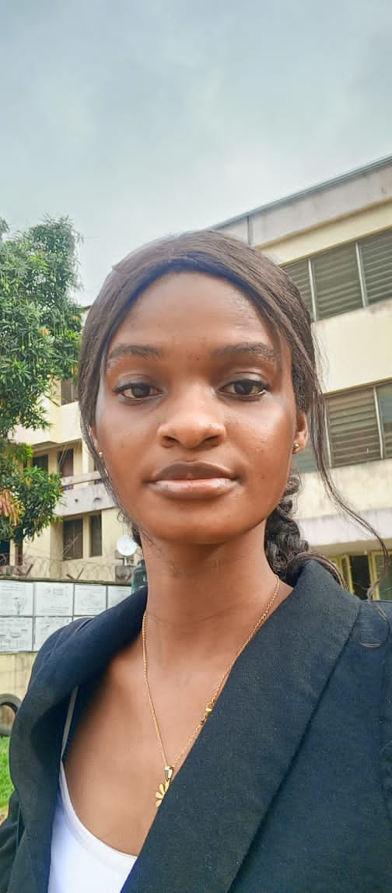
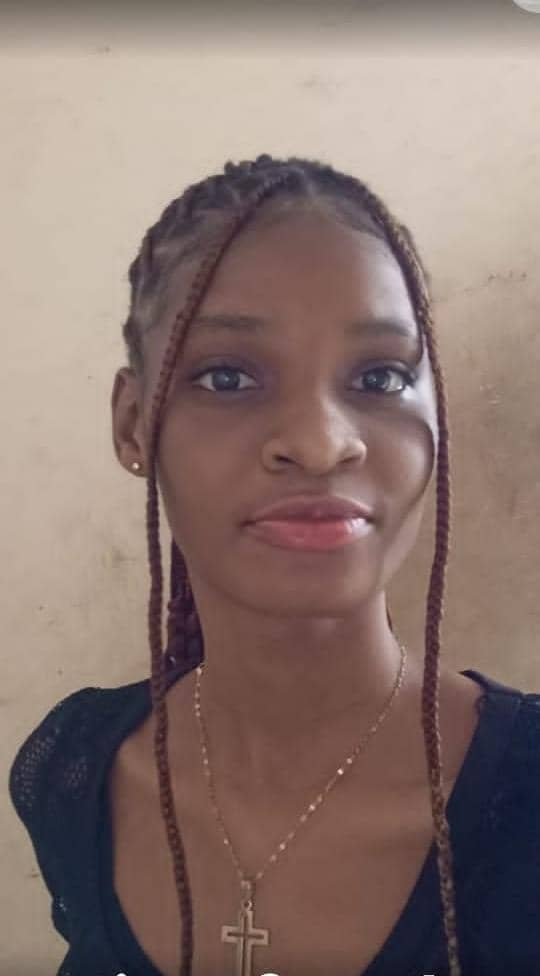

As a dynamic leader and accomplished public speaker, she has consistently demonstrated her commitment to excellence and community engagement. Her leadership journey began early, serving as class captain three times and achieving the title of perfect in primary school and high school. She was awarded the 3rd overall best-graduating student in her elementary school. She has received prizes in her high school for excelling at subjects like Biology, French, Catering, Chemistry, and English.
In high school, she was actively involved in the Literary and Debating Society and the JETS Club, which ignited her passion for public discourse and critical thinking. Now at the university level, she continues to thrive as a key member of the academic committees in her hall, department, and faculty. BClassy has also enriched the university's intellectual community through her involvement in the Education Literary and Debating Society, the Obafemi Awolowo Hall Literary and Debating Society, and the Science and Technology Education Literary and Debating Society. Currently, she holds multiple leadership positions: the Public Relations Officer, Speech Coach, and President of her department and faculty Literary and Debating Society respectively.
Beyond her departmental and faculty responsibilities, she serves as the Public Relations Officer for the Federation of Ekiti State Students Union at the University of Ibadan, showcasing her commitment to enhancing student engagement and representation. BClassy's skills in content creation have enabled her to write compelling articles for various platforms, including UI’SU, FESSU, and notable brands. Her efforts have earned her recognition, including numerous awards:
- Public Speaker of the Year (twice) Department (2022 & 2023)
- Nominee for Most Popular Fresher and Most Sociable Fresher at Awo Hall
- Winner of Most Sociable Fresher at Awo Hall
- Winner of Best Orator at the Tug of Words, Faculty of Education (2023)
- Winner of 2nd Best Debater at the Tug of Words, Faculty of Education (2024)
- Winner of the Faculty of Technology Bilaterals (2023)
- Member of the Academic Committee (Hall, Department, and Faculty)
- Two-time nominee for Public Speaker of the Year in the Faculty of Education
- Nominee for Staylite of the Year (Department and Hall)
- UI’SU Influencer of the Week
- Winner of the Pelz Education Quiz at the Faculty of Education
- 2nd Best Orator in the Interdepartmental Oratory Competition (Faculty of Education)
- Winner (Academically Impactful fresher)
- Conducted numerous tutorials for GES, Education, and Science courses
- Member, Media and Publicity Committee (UI'SU, TLDS, Education, FESSU and various organizations across Nigeria)

Public relations is about fostering communication, relationships, and creativity, and BClassy exemplifies these qualities. Her diverse talents extend to journalism, music, public speaking, and advertising, marking her as a multi-faceted individual committed to excellence.Creativity is another cornerstone of BClassy’s life. She creatively engages with her community as a skilled reporter, public relations expert, musician, voice-over artist, and writer. Highlights of her creative journey include:
- Competing in prestigious online music challenges such as the Techno Spark Challenge, Showcase, and StartUp9ja
- Promoting notable brands like Kachy's Küche Foods, Sulnah House of Hair, and LaseScents
- Crafting content for significant projects, including Triple Challenge 2.0
- Providing engaging voice-overs for recruitment drives for the Literary and Debating Society and the Faculty of Education
- Keeping audiences updated on global events through active social media engagement
- Participating in the Awo Beauty Pageantry, emerging as 2nd runner-up, where she showcased her multifaceted skills
Outside of her academic and creative pursuits, BClassy enjoys exploring her culinary talents and experimenting with new recipes. As a passionate reader and researcher, she constantly seeks knowledge, expanding her horizons and fueling her curiosity.
As a trailblazer, BClassy is devoted to inspiring and uplifting others, aspiring to leave a lasting impact in the realms of science, art, leadership, and beyond.
